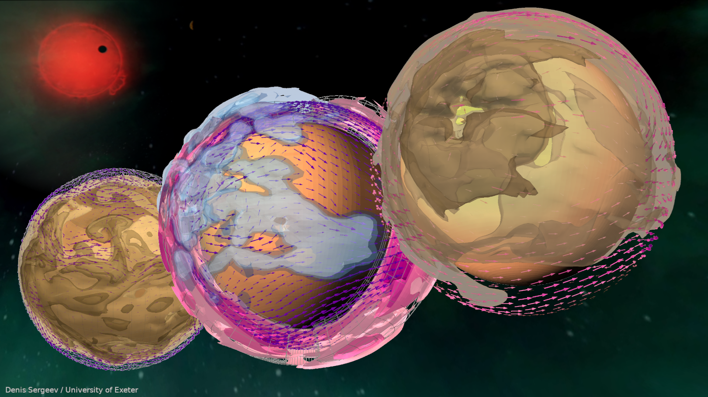
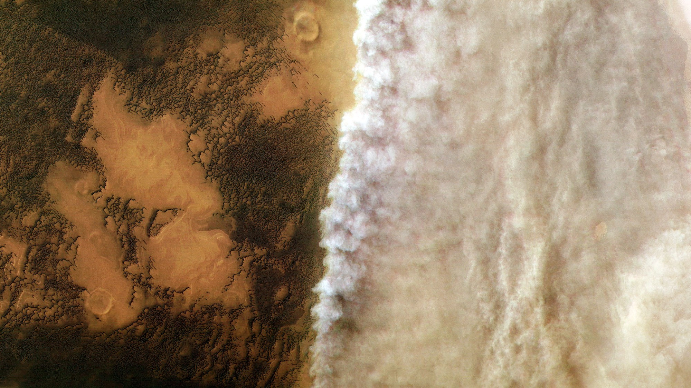

Atmospheric aerosols

Aerosols - such as cloud condensates, photochemical hazes and mineral dust - play a crucial role in shaping planetary climates. My collaborators and I simulate their formation and evolution on different planets, including Mars, Earth-like exoplanets and hot Jupiters.
I demonstrated the importance of cloud-climate feedbacks on the climate of terrestrial exoplanets, using Proxima Centauri b and TRAPPIST-1e as examples3. What is particularly important is how convective clouds are represented in 3D climate models - it is possible, albeit with a higher computational cost, to resolve these clouds better using models with finer grids. This allows us to simulate both cloudy and cloud-free patches of the atmosphere with more physical realism, which makes the model better resolve how much energy from the planet’s host star is reflected back or absorbed by the planet. These cloud-related climate mechanisms may also affect the preferred state of the global wind structure on a tidally-locked exoplanet, which may be dependent on model components or even initial conditions of the model run2. It is therefore crucial to perform multi-model climate studies for exoplanets and systematically compare 3D climate models.
In a series of papers led by Mei Ting (Martha) Mak, we used the Met Office’s Unified Model to simulate the imact of haze on the climate of the Archean Earth (2.5-4 billion years ago)4, a tidally locked rocky exoplanet TRAPPIST-1e5 and three different hot Jupiters (HD 189733b, HD 209458b and WASP-39b)6. For the Archean Earth, we showed4 that a thin layer of haze leads to warming of the global climate due to the change of abundance and location of water vapor and clouds. A thick aerosol layer, on the other hand, cools down the climate rapidly and makes it uninhabitable. For TRAPPIST-1e, we varied the concentration of carbon dioxide and methane, resulting in a different amount of photochemical haze, which ultimately resulted in different global circulation and cloud regimes5. For hot Jupiters6, we demonstrated that the equatorial jet determines the day-to-night distribution of haze, while eddies determine the south-to-north distribution and local fluctuations of the haze layer. Our work also suggests that an observed increase in transit depth over the morning terminator across the ultra-violet and optical wavelength regime could serve as a strong indicator of the presence of haze on hot Jupiters.
Mineral dust is an important component of the atmosphere - be it on Earth or on its solar system neighbour, Mars. In a 2023 paper7 led by Danny McCulloch, we applied the Unified Model to the climate of modern Mars. We focused on the impact of dust on the large-scale wind and temperature structure. Our simulations demonstrated how dust, through its interaction with stellar/thermal heating/cooling, accelerates the winds and creates an isothermal layer in mid-latitudes during the dusty season. A PhD project is currently under way to adapt the next-generation atmospheric model of the Met Office, LFRic8, to the climate of Mars.
